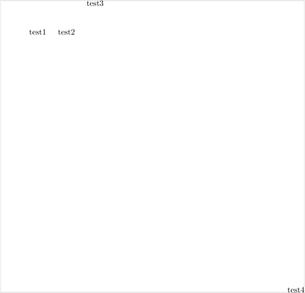

Contents
Summary
The command
\position
positions objects
Settings
| \position[...=...,...](...,...){...} | |
| ...=...,... | inherits from \setuppositioning |
| (...,...) | position |
| {...} | content |
Description
Places objects within
\startpositioning
.
Examples
Example 1
-
\ruledvbox{\startpositioning \position(1,1){test1} % default unit = 1cm \position[xstep=relative](1,1){test2} \position[ystep=relative](3,-1){test3} \position(10,10){test4} \stoppositioning}
- 